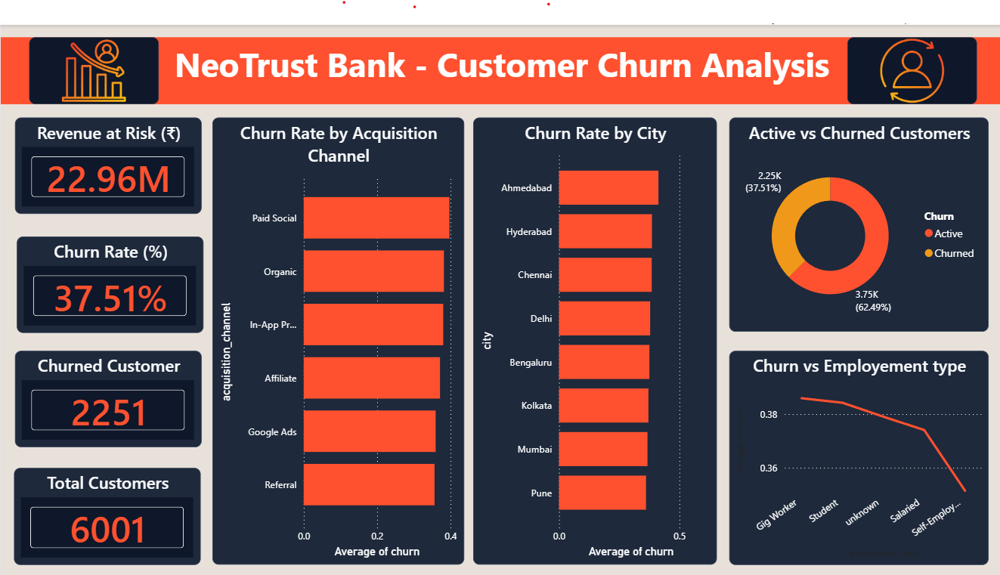
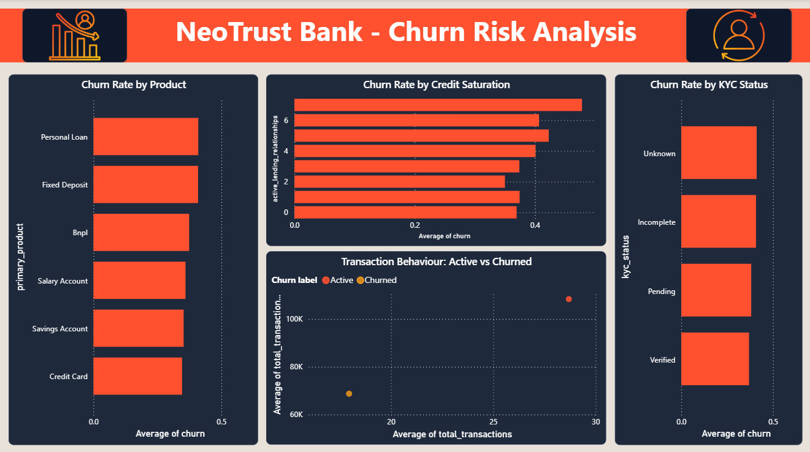
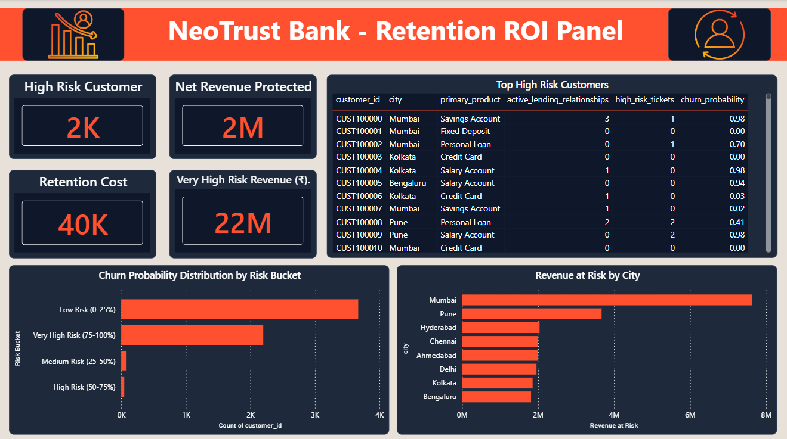

An end-to-end customer churn prediction and retention analytics platform that combines data engineering, machine learning, SQL analytics, and interactive Power BI dashboards to help banking executives identify high-risk customers, estimate revenue at risk, and optimize retention campaigns through data-driven decision making.

NeoTrust Bank was developed as a complete customer retention analytics solution for the BFSI sector. The project integrates a professional ETL pipeline, exploratory data analysis, a two-model machine learning architecture, SQL-based business intelligence, and executive Power BI dashboards to identify customers likely to churn and quantify the financial impact of customer attrition.
Clean customer records generated after ETL processing and data quality validation.
Customers identified as inactive based on 90-day transaction behaviour.
Estimated annual revenue potentially lost because of customer churn.
Conservative campaign ROI achieved by saving only 20% of targeted high-risk customers.
Indian neo-banks invest heavily in acquiring new customers, yet many customers become inactive before delivering long-term value. Every customer who churns represents not only lost future revenue but also a complete loss of acquisition investment, making customer retention one of the highest-impact business priorities for digital banking organizations.
NeoTrust Bank needed an intelligent system capable of identifying customers at risk of churn before they permanently disengaged. The objective was not simply to build a predictive model, but to create a complete decision-support platform that combines ETL, machine learning, SQL analytics, financial impact estimation, and executive dashboards into one actionable retention framework. This enables business teams to prioritize high-risk customers, optimize marketing spend, and maximize retention ROI.
NeoTrust Bank was designed to help business stakeholders move beyond traditional churn reporting by combining modern data engineering, machine learning, SQL analytics, and financial impact analysis into a single decision-support solution for proactive customer retention.
Develop machine learning models capable of identifying customers who are most likely to churn before permanent disengagement occurs.
Perform exploratory analysis to identify behavioural, demographic, and operational factors contributing to customer attrition.
Estimate annual revenue at risk, measure customer lifetime impact, and calculate the ROI of retention campaigns.
Deliver interactive Power BI dashboards that help executives prioritize customers, allocate budgets, and improve retention strategies.
NeoTrust follows a production-inspired analytics architecture that transforms raw customer data into actionable business intelligence through ETL pipelines, machine learning, SQL analytics, and interactive Power BI dashboards.
Customer Master, Transaction Logs, and Support Ticket datasets are collected from independent banking systems for analysis.
Python scripts ingest, clean, merge, and validate data using SQLite, SQLAlchemy, and automated transformation workflows.
A two-model architecture predicts customer churn using behavioural signals and demographic risk segmentation.
SQL queries, Revenue Impact Calculator, and Power BI dashboards translate analytical outputs into executive business insights.
High-risk customers are prioritized for intervention, allowing management to protect revenue, reduce churn, and improve campaign ROI.
NeoTrust combines interactive Power BI dashboards with machine learning outputs to provide executives with complete visibility into customer behaviour, churn risk, and financial impact. Each dashboard addresses a specific business question while supporting proactive retention decisions.
Provides an executive summary of customer base, overall churn rate, revenue at risk, acquisition channels, city-wise churn, and employment analysis through a unified dashboard.

Analyzes the key behavioural and demographic drivers behind customer churn, including product usage, credit saturation, KYC completion, and transaction behaviour.

Combines machine learning predictions with financial impact analysis to identify high-risk customers, estimate revenue protected, and prioritize retention campaigns.
Unlike conventional churn prediction projects that rely on a single machine learning model, NeoTrust combines a two-model prediction framework with a financial impact calculator. This enables business leaders not only to identify customers at risk but also to prioritize retention campaigns based on projected revenue impact and return on investment.
Instead of relying on a single predictive model, NeoTrust separates customer churn into behavioural prediction and demographic risk segmentation. This prevents data leakage, improves interpretability, and provides business teams with both immediate churn detection and early customer risk identification.
Machine learning predictions are translated into business value through a Revenue Impact Calculator that estimates annual revenue at risk, retention campaign costs, and expected ROI under multiple business scenarios. This bridges the gap between technical model outputs and executive decision-making.
The analytical workflow uncovered several behavioural, demographic, and operational patterns influencing customer churn. These insights help banking executives prioritize high-value retention initiatives instead of applying generic retention campaigns.
Customers acquired through Paid Social campaigns recorded the highest churn, while Referral customers demonstrated the strongest loyalty.
Customers with Unknown or Incomplete KYC showed significantly higher churn behaviour, highlighting onboarding quality as a retention driver.
Customers maintaining five or more active lending relationships exhibited the highest churn probability, suggesting financial overextension.
Customers with declining transaction frequency were consistently more likely to churn, making transaction activity the strongest behavioural signal.
Account closure requests and hidden charge complaints emerged as strong indicators of future customer attrition.
Even a conservative 20% retention success rate can protect over ₹4 lakh while generating approximately 920% ROI.
Based on the analytical findings, the following recommendations can help NeoTrust Bank reduce customer churn, improve retention efficiency, and maximize long-term customer value.
Automatically identify customers with prolonged transaction inactivity and trigger immediate retention campaigns before behavioural churn becomes permanent.
Offer financial health checks or debt consolidation products to customers managing multiple lending relationships to reduce churn risk.
Launch personalized KYC completion campaigns for customers with Unknown or Incomplete verification to improve long-term engagement.
Shift acquisition spending towards referral programs and prioritize high-value, high-risk customers using predictive retention analytics.
NeoTrust combines modern data engineering, machine learning, business intelligence, and financial analytics tools to build an end-to-end customer churn prediction and retention platform for the BFSI domain.
Data preprocessing, ETL pipeline, feature engineering, machine learning, and business analytics.
Database ingestion, storage, SQL queries, and ETL pipeline management.
Random Forest models, model evaluation, feature importance, and churn prediction.
Interactive executive dashboards for churn analysis, customer risk, and revenue impact.
Business insight queries, customer segmentation, retention analysis, and KPI reporting.
Version control, project collaboration, documentation, and portfolio deployment.